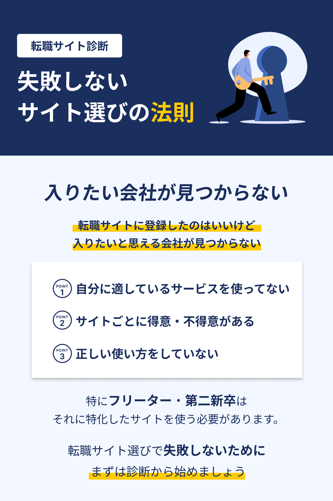
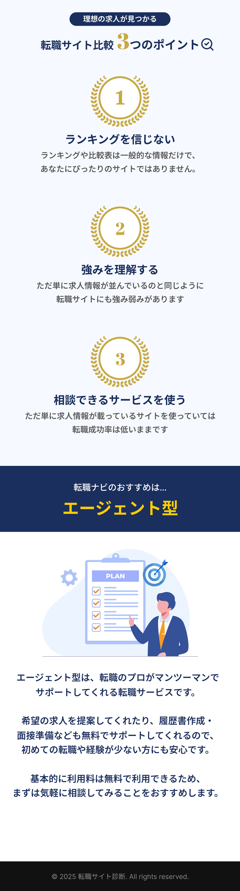

転職サイト選びの法則
年齢
地域
職種
この3つを基本に選びましょう
質問1
年齢を教えてください
24歳以下
25歳〜29歳
30歳〜34歳
35歳〜39歳
40歳〜44歳
45歳〜49歳
50歳以上
質問2
性別を教えてください
男性
女性
その他
質問3
現職について
在職中
求職中
フリーター（派遣・アルバイト）
質問4
勤務希望地を教えてください
選んでください
北海道
東北
関東（東京・神奈川・埼玉・千葉）
東海（愛知・静岡）
関西（大阪・兵庫・京都）
中国・四国
九州・沖縄
リモート・在宅
質問5
現在で担当の職種は？
選んでください
営業
企画・マーケティング
エンジニア・IT
事務・管理
販売・接客
医療・福祉
製造・物流
その他・未経験
質問6
今の年収を教えてください
〜300万円
〜400万円
〜500万円
〜600万円
〜700万円
701万円以上
質問7
どんな企業に入りたいですか？
大手企業
中小企業
ベンチャー企業
特にない
診断結果を見る
